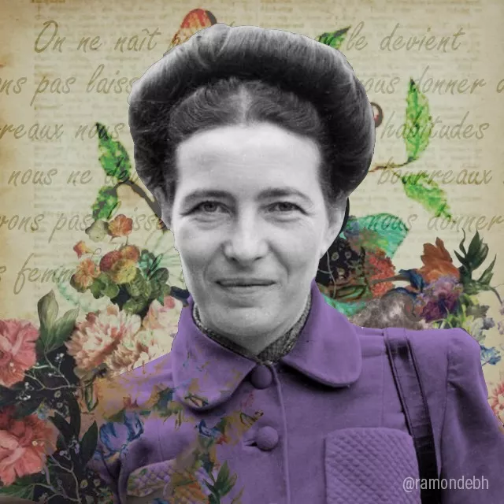

Simone de Beauvoir

Simone Lucie-Ernestine-Marie Bertrand de Beauvoir, mais conhecida como Simone de Beauvoir, foi uma escritora, intelectual, filósofa existencialista, ativista política, feminista e teórica social francesa. Era feminista e defensora do amor livre, o qual vivenciou com o filósofo Jean-Paul Sartre. Suas obras literárias têm aspectos filosóficos associados ao existencialismo. Sua obra teórica mais famosa é o livro O segundo sexo. Já seus romances mais conhecidos são A convidada e Os mandarins.